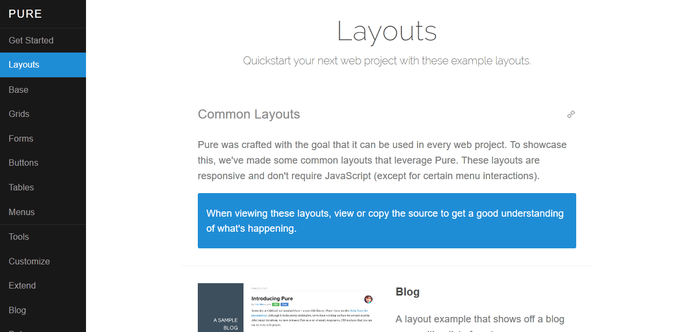

About The Blog
Just a place for me to document the things ive found during the week. This will include but not be limited to
Websites, Web people, Podcasts, SVG related content and Web news
Updates will be made throughout the week, but at least one new item is guarenteed per week.
Date Added: 11/4/2016
Color Adobe is a useful site for web developers to find attractive colour schemes, or create your own.

Date Added: 11/4/2016
Placeholder Images for every case. Webdesign or Print. It's simple and free. Just put the custom url in your code

Date Added: 11/4/2016
icono is an icon pack that needs no external resources. Every tags can be an icon made with pure CSS.

Date Added: 11/4/2016
Pure was crafted with the goal that it can be used in every web project. To showcase this, we've made some common layouts that leverage Pure. These layouts are responsive and don't require JavaScript (except for certain menu interactions).

Date Added: 11/4/2016
If you need to convert files from one markup format into another, pandoc is your swiss-army knife.

Date Added: 11/4/2016
Freepik helps you to find free vector art, illustrations, icons, PSD and photos for using in websites, banners, presentations, magazines...

Date Added: 11/4/2016
A large library of background textures, each can be recoloured to suit your needs.

(He describes it best himself.)
Dudley Storey, author of Pro CSS3 Animation, Smashing Magazine contributing editor, teacher and speaker. This is my site (formerly demosthenes.info), where I write about all aspects of web development.

SVG is sharp, can be resized without quality loss, embedded as code, and lightweight in size. This site contains some useful patterns.

Date Added: 11/4/2016
Faster web pages and apps Reduces image file sizes — so they take up less disk space and download faster — by applying advanced compression that preserves quality. Image files scrubbed clean Removes invisible junk: private EXIF metadata
from digital cameras, embedded thumbnails, comments, and unnecessary color profiles. Best tools with drag'n'drop Seamlessly combines all the best image optimization tools: MozJPEG, Pngcrush, pngquant, 7zip and Google Zopfli. All Free and
Open-Source.

Date Added: 11/4/2016
Need help finding compatable font types? Look no further, simply click the drop down and select.